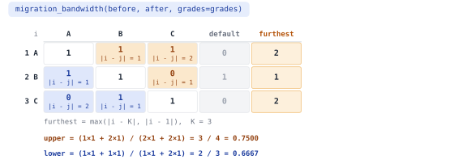

模型验证#
用内部评级计算资本要求的银行至少每年验证一次每个模型，并把结果报告给监管机构。对内部评级法（IRB）的 PD、LGD 和 CCF 模型，欧洲央行在 2019 年 2 月发布的《Instructions for reporting the validation results of internal models》中规定了报告所用的定量工具：估计值的回测、与初始验证相比的区分能力，以及评级的稳定性。本指南把每个工具对应到 kivi 的函数，并按报告的顺序在模拟数据上计算。
模型由 模型监控 逐期跟踪，验证则每年对其审查一次；下一篇指南 监管资本 把经过验证的 PD 转换为其所需的资本，之后 Vintage 与滚动率分析 跟踪模型所通过的贷款。这些工具属于模型的不同步骤： 校准 回测估计值， 模型表现 衡量排序能力， Vintage 与滚动率分析 跟踪等级之间的迁移，这些指南详细解释了每个函数。 jeffreys_test() 、 roc_auc_interval() 、 migration_bandwidth() 、 migration_test() 、 concentration_test() 、 backtest_table() 和 generalized_auc() 计算报告中的统计量， default_rate_table() 由月度面板统计每个等级的客户数和违约数， spiegelhalter_test() 和 brier_decomposition() 则补充了报告没有要求的两项检查。
报告中的工具#
节 |
工具 |
kivi |
|---|---|---|
2.5.3.1 |
用 Jeffreys 检验回测每个等级及整个资产组合的 PD |
对 |
2.5.4.1、附件 3.1 |
当前 AUC 与初始验证时的 AUC 比较 |
|
2.5.5.1 |
客户迁移：上、下 MWB |
|
2.5.5.2 |
迁移矩阵的稳定性：每个非对角单元格的 z 检验 |
|
2.5.5.3 |
评级等级的集中度：HI 与变异系数的检验 |
|
2.6.2.1、2.8.2.1、2.9.3.1、2.9.3.2 |
用单侧 t 检验回测 LGD、违约后 LGD、CCF 以及采用 EAD 方法的债项的 EAD |
|
2.7.2.1 |
用双侧 t 检验回测 ELBE |
|
2.6.3.1、2.9.4.1、附件 3.2 |
LGD 或 CCF 的当前 gAUC 与初始验证时的 gAUC 比较 |
|
无 |
单个客户概率的校准 |
|
无 |
Brier 分数的可靠性与分辨力 |
报告还要求一些不需要统计量的计数，例如评级缺失或被推翻的客户数，以及定性评估。kivi 把这些以及报告模板留给银行自己处理。
PD 模型#
示例使用 make_applications() 中现有评分卡的 PD（见 示例数据 ），取两个样本中获批的申请人：一个代表模型的初始验证，另一个代表当前观察期。
>>> import math
>>> import numpy as np
>>> import pandas as pd
>>> from kivi.datasets import make_applications
>>> initial = make_applications(n_applicants=5000, rng=0).query("approved")
>>> current = make_applications(n_applicants=5000, rng=1).query("approved")
回测各等级#
把 PD 映射到主标尺的等级上，用 jeffreys_test() 以每个等级的违约检验其 PD。该检验是单侧的：p 值较小说明该等级的违约数多于其 PD 的预测。主标尺和该检验的说明见 校准 。
>>> from kivi.calibration import assign_grades, calibration_table, jeffreys_test, master_scale
>>> scale = master_scale(np.geomspace(0.01, 0.16, 5), labels=list("ABCDE"))
>>> grades = assign_grades(current["incumbent_pd"], scale)
>>> table = calibration_table(grades, current["target"], current["incumbent_pd"])
>>> table = table.join(scale["probability"])
>>> table.assign(
... jeffreys=jeffreys_test(table["event"], table["total"], table["probability"])
... ).round(3)
total event event_rate mean_probability probability jeffreys
bin
A 5 0 0.000 0.012 0.01 0.255
B 138 1 0.007 0.023 0.02 0.865
C 809 37 0.046 0.045 0.04 0.200
D 1713 180 0.105 0.083 0.08 0.000
E 664 117 0.176 0.131 0.16 0.128
报告还要求以整个资产组合的平均 PD 检验整个资产组合。把它作为一个分组统计：
>>> portfolio = calibration_table(
... ["all"] * len(current), current["target"], current["incumbent_pd"]
... )
>>> jeffreys_test(portfolio["event"], portfolio["total"], portfolio["mean_probability"]).round(6)
bin
all 0.000022
dtype: float64
现有 PD 低估了当前观察期的违约率：等级 D 的违约率为 10.5%，而 PD 为 8%；整个资产组合的违约率为 10.1%，而平均 PD 为 8.1%。
报告按观察期开始时定义计数：N 是某个等级中当时未处于违约的客户，D 是其中在观察期内至少违约一次的客户（迁移到其他等级或模型之后的违约也算），PD 是该等级在期初的 PD（第 2.3 节）。等级来自月度面板时，以观察期前一个月为唯一起点月的 default_rate_table() 以 total 给出 N、以 event 给出 D，给出 probability 时还以 mean_probability 给出每个等级在该月的 PD。这里把 Vintage 与滚动率分析 中模拟贷款组合的贷款按逾期状态分池，每个池一个 PD，观察期为 2025 年，因此起点月是 2024 年 12 月：
>>> from kivi.datasets import make_loan_panel
>>> from kivi.vintage import default_rate_table
>>> panel = make_loan_panel(rng=0)
>>> pool_pd = pd.Series({"current": 0.04, "1-29": 0.25, "30-59": 0.5, "60-89": 0.8})
>>> counts = default_rate_table(
... panel["loan_id"],
... panel["month"],
... panel["status"],
... panel["status"] == "90+",
... starts=["2024-12"],
... probability=panel["status"].map(pool_pd).astype(float),
... )
>>> counts.assign(
... jeffreys=jeffreys_test(counts["event"], counts["total"], counts["mean_probability"])
... ).round(3)
total event exited event_rate mean_probability jeffreys
start grade
2024-12 current 2146 73 413 0.034 0.04 0.924
1-29 65 17 12 0.262 0.25 0.406
30-59 23 16 0 0.696 0.50 0.029
60-89 15 11 0 0.733 0.80 0.753
12 月已处于违约的贷款（即 90+ 池）不属于任何等级，因此它们缺失的 PD 无关紧要。30-59 池的违约率为 69.6%，而其 PD 为 50%，检验在 5% 的水平上拒绝；其他各池都通过。 current 池中有 413 笔贷款在 2025 年内未违约就离开了组合，它们仍计入 N，这与报告的计数方式一致。
当前 AUC 与初始 AUC 比较#
报告把当前观察期的 AUC 与初始验证时的 AUC 相比较，后者视为已知，原假设为 AUC 没有下降：
其中 \(s\) 是当前 AUC 的标准误， roc_auc_interval() 按附件 3.1 的方法估计它。由两个 AUC 计算检验只需两行：
>>> from kivi.metrics import roc_auc_interval
>>> initial_auc = roc_auc_interval(initial["incumbent_pd"], initial["target"]).loc["auc"]
>>> current_auc = roc_auc_interval(current["incumbent_pd"], current["target"]).loc["auc"]
>>> s = (initial_auc["estimate"] - current_auc["estimate"]) / current_auc["se"]
>>> print(f"S = {s:.2f}, p = {0.5 * math.erfc(s / math.sqrt(2)):.3f}")
S = -0.29, p = 0.616
当前 AUC 为 0.658，略高于初始 AUC 的 0.654，因此排序能力没有变差。检验中只出现当前 AUC 的标准误，因为报告把初始 AUC 视为固定值。
迁移与集中度#
稳定性工具接受每个客户在观察期开始和结束时的等级。 migration_bandwidth() 给出迁往较差和较好等级的上、下 MWB， migration_test() 给出迁移矩阵每个非对角单元格的 z 检验。违约、转用其他评级体系或与银行终止业务关系的客户使用自己的状态，例如 "default" ，并且只计入其期初等级的客户数，这与报告对迁移矩阵的定义一致：
>>> from kivi.vintage import migration_bandwidth
>>> before = ["A", "A", "A", "B", "B", "B", "C", "C"]
>>> after = ["A", "B", "C", "A", "B", "default", "B", "C"]
>>> migration_bandwidth(before, after, grades=["A", "B", "C"]).round(4)
statistic
upper 0.7500
lower 0.6667
dtype: float64

migration_bandwidth 如何为各次迁移加权。每次迁往较差等级的迁移（位于对角线上方）把其距离 |i - j| 计入上 MWB 的分子，把从其等级出发向任一方向的最远迁移计入分母。迁往较好等级的迁移以同样的方式构成下 MWB，违约的客户两者都不计入。#
Vintage 与滚动率分析 在一个有五个等级的模拟资产组合上解释了这两个函数。
concentration_test() 给出各等级的 HI，并检验其变异系数自初始验证以来是否上升。在两个样本中都统计标尺的每个等级，无论是否为空：
>>> from kivi.calibration import concentration_test
>>> initial_grades = assign_grades(initial["incumbent_pd"], scale)
>>> concentration_test(
... grades.value_counts(sort=False), initial_counts=initial_grades.value_counts(sort=False)
... ).round(4)
statistic
hi 0.3744
cv 0.9092
initial_hi 0.3825
initial_cv 0.9223
statistic -0.0250
p_value 0.5100
dtype: float64
各等级的集中度与初始验证时相同。
报告要求对客户数计算 HI 并做这一检验，对敞口则只计算 HI；不传 initial_counts 、只传入每个等级的敞口时， concentration_test 给出后者。
LGD 和 CCF 模型#
LGD 工具使用回收过程在观察期内结案的债项。这里五个债项等级中的 1,500 个已结案违约的实际 LGD 像回收结果通常那样在其等级 LGD 周围分散得很开。等级 F4 的 LGD 围绕 68% 抽取，而不是其等级 LGD 60%：
>>> rng = np.random.default_rng(0)
>>> grade_lgd = pd.Series([0.10, 0.25, 0.40, 0.60, 0.80], index=["F1", "F2", "F3", "F4", "F5"])
>>> facility_grade = pd.Series(pd.Categorical(
... rng.choice(grade_lgd.index, size=1500, p=[0.25, 0.3, 0.2, 0.15, 0.1]),
... categories=grade_lgd.index,
... ordered=True,
... ), name="grade")
>>> estimated = facility_grade.map(grade_lgd).astype(float)
>>> mean = estimated + np.where(facility_grade == "F4", 0.08, 0.0)
>>> realized = pd.Series(rng.beta(1.5 * mean, 1.5 * (1 - mean)), name="realized")
回测估计值#
backtest_table() 对每个等级给出估计 LGD 和实际 LGD 的均值、二者之差的方差以及报告中的 t 检验，p 值较小说明估计值偏低：
>>> from kivi.calibration import backtest_table
>>> backtest_table(facility_grade, realized, estimated).round(4)
total estimated realized difference variance statistic p_value
bin
F1 363 0.10 0.1114 0.0114 0.0409 1.0767 0.1412
F2 427 0.25 0.2223 -0.0277 0.0690 -2.1822 0.9852
F3 311 0.40 0.3863 -0.0137 0.1006 -0.7602 0.7762
F4 251 0.60 0.7064 0.1064 0.0793 5.9874 0.0000
F5 148 0.80 0.8016 0.0016 0.0662 0.0758 0.4698

等级 F4 的平均实际 LGD 超过其 60% 的估计值，也只有它的 p 值低于 5%。#
只有等级 F4 被拒绝。报告也要求检验整个资产组合；为每个债项传入同一个分组：
>>> backtest_table(["all"] * len(realized), realized, estimated).round(4)
total estimated realized difference variance statistic p_value
bin
all 1500 0.3576 0.3676 0.01 0.0721 1.4422 0.0747
在资产组合层面，等级 F4 的不足被其他等级稀释，在 5% 的水平下不再显著。同一张表也可以回测违约后 LGD 和 CCF，用它们的估计值和实际值代替 LGD 即可；还可以回测采用 EAD 方法的债项的 EAD 估计值，以违约时的提款金额作为实际值。ELBE 做双侧检验，其 p 值为 2 * min(p_value, 1 - p_value) 。
广义 AUC#
LGD 模型的区分能力用 generalized_auc() 在估计分段与实际分段的列联表上计算的 gAUC 衡量。对债项等级不超过 20 个的模型，行是按 LGD 排序的等级，实际 LGD 按等级划分为若干类：第一类是不超过等级中最小 LGD 的实际 LGD，第二类是不超过第二小 LGD 的其余实际 LGD，最后一类是高于最大 LGD 的实际 LGD。这些类右端闭合，正是 pandas.cut 的默认方式：
>>> realized_class = pd.cut(
... realized, [-np.inf, *grade_lgd, np.inf], labels=["R1", "R2", "R3", "R4", "R5", "R6"]
... )
>>> pd.crosstab(facility_grade, realized_class)
realized R1 R2 R3 R4 R5 R6
grade
F1 266 35 25 17 13 7
F2 200 90 42 44 27 24
F3 77 64 41 38 38 53
F4 10 16 18 30 52 125
F5 2 7 10 9 23 97
估计分段在前，实际分段在后：
>>> from kivi.metrics import generalized_auc
>>> gauc = generalized_auc(facility_grade, realized_class)
>>> gauc.round(4)
estimate se lower upper
statistic
gauc 0.77 0.0072 0.7559 0.7841
somers_d 0.54 0.0144 0.5117 0.5683
与 AUC 一样，把当前 gAUC 与初始验证时的 gAUC 相比较，后者视为已知。设初始 gAUC 为 0.78：
>>> s = (0.78 - gauc.loc["gauc", "estimate"]) / gauc.loc["gauc", "se"]
>>> print(f"S = {s:.2f}, p = {0.5 * math.erfc(s / math.sqrt(2)):.3f}")
S = 1.39, p = 0.083
gAUC 下降了一个百分点，在 5% 的水平下不显著。等级 F4 有一半的债项实际 LGD 高于等级 F5 的 LGD 80%，因此 F4 的不足也模糊了这两个等级之间的排序。
连续型模型#
债项等级或池超过 20 个的模型，或 LGD 为连续值的模型，按报告中的十二个 LGD 分段检验：0% 到 5%、5% 到 10%，然后以 10% 为步长到 100%，以及 100% 及以上。每个分段包含其下限，因此用 right=False 切分：
>>> segments = [0, 0.05, 0.1, 0.2, 0.3, 0.4, 0.5, 0.6, 0.7, 0.8, 0.9, 1, np.inf]
>>> model_lgd = pd.Series(rng.beta(1.2, 2.0, size=1500))
>>> outcome = pd.Series(rng.beta(1.5 * model_lgd, 1.5 * (1 - model_lgd)))
>>> estimated_segment = pd.cut(model_lgd, segments, right=False)
>>> backtest = backtest_table(estimated_segment, outcome, model_lgd)
>>> backtest[["total", "estimated", "realized", "statistic", "p_value"]].round(3)
total estimated realized statistic p_value
bin
[0.0, 0.05) 84 0.028 0.029 0.020 0.492
[0.05, 0.1) 98 0.075 0.079 0.241 0.405
[0.1, 0.2) 263 0.150 0.137 -1.037 0.850
[0.2, 0.3) 212 0.249 0.259 0.524 0.300
[0.3, 0.4) 215 0.345 0.351 0.272 0.393
[0.4, 0.5) 186 0.448 0.424 -1.119 0.868
[0.5, 0.6) 166 0.550 0.593 1.817 0.036
[0.6, 0.7) 125 0.648 0.643 -0.186 0.574
[0.7, 0.8) 85 0.746 0.740 -0.190 0.575
[0.8, 0.9) 44 0.842 0.816 -0.720 0.762
[0.9, 1.0) 22 0.922 0.930 0.208 0.419
这个模型按构造是校准良好的，但十一个分段中仍有一个的 p 值低于 5%，这在随机波动范围之内。没有估计值达到 100%，因此最后一个分段为空，被省略。
计算 gAUC 时，实际 LGD 切分成同样的分段。回收额超过敞口时实际 LGD 低于 0，会落在第一个分段之外而成为缺失值，因此切分前先把实际值截断到 0 以上：
>>> realized_segment = pd.cut(outcome.clip(lower=0), segments, right=False)
>>> generalized_auc(estimated_segment, realized_segment).round(4)
estimate se lower upper
statistic
gauc 0.7614 0.0067 0.7482 0.7745
somers_d 0.5228 0.0134 0.4964 0.5491
报告之外#
报告逐个检验每个等级的 PD。 spiegelhalter_test() 不分组，一次检验所有客户的 PD。现有 PD 全部低于 1/2，因此统计量为正表示违约多于 PD 的预测；它的值 4.09 证实这些 PD 低估了当前观察期的风险：
>>> from kivi.calibration import brier_decomposition, spiegelhalter_test
>>> statistic, pvalue = spiegelhalter_test(current["incumbent_pd"], current["target"])
>>> print(f"z = {statistic:.2f}, p = {pvalue:.1e}")
z = 4.09, p = 4.3e-05
brier_decomposition() 按等级把 PD 的 Brier 分数分解为可靠性（被低估的 PD 会使其升高）、分辨力（衡量各等级违约率之间的差别）和结果的不确定性：
>>> brier_decomposition(grades, current["target"], current["incumbent_pd"]).round(4)
statistic
brier 0.0887
reliability 0.0007
resolution 0.0023
uncertainty 0.0905
within_variance 0.0002
within_covariance 0.0004
dtype: float64
样本权重#
报告统计的是客户数和债项数，因此其检验不要使用权重。这些函数把 weights 视为频数权重，适合已汇总为计数的数据：整数权重与重复相应行的结果相同，检验把总权重视为观测数。因此，用抽样率的倒数等校正抽样的权重，会使标准误过小、p 值过低。 concentration_test() 接受的则是各等级的计数或敞口。
局限#
所有检验都假定观测相互独立。违约和回收同涨同落时（例如经济下行期），回测的拒绝频率会高于名义水平。
集中度检验比较 \(K\) 个等级的变异系数，其方差取决于 \(K\) 而非客户数，因此等级较少的标尺使检验的功效很低。除了 p 值，也要看 HI 及其变化。
迁移检验为 \(K (K - 1)\) 个非对角单元格各给出一个 p 值，因此仅凭随机波动就会有一些低于 5%。
对于违约很少的资产组合，附件 3.1 把各观察期合并，合并前把每个评级替换为该期评级相同或更差的客户所占的比例，这里的评级越高代表客户越好。对随风险上升的 PD 而言，这些是 PD 相同或更高的客户，即
score.groupby(period).rank(method="max", ascending=False, pct=True)。这一比例随风险上升而下降，因此请把它的相反数-score.groupby(period).rank(method="max", ascending=False, pct=True)传给roc_auc_interval()，由它接收合并后的取值。等级有并列时，评级相同或更好的客户比例，即不带ascending=False的rank(method="max", pct=True)，会给出另一个 AUC。kivi 计算报告中的统计量，但不处理其数据排除、推翻评级和缺失评级的计数，也不生成报告模板。